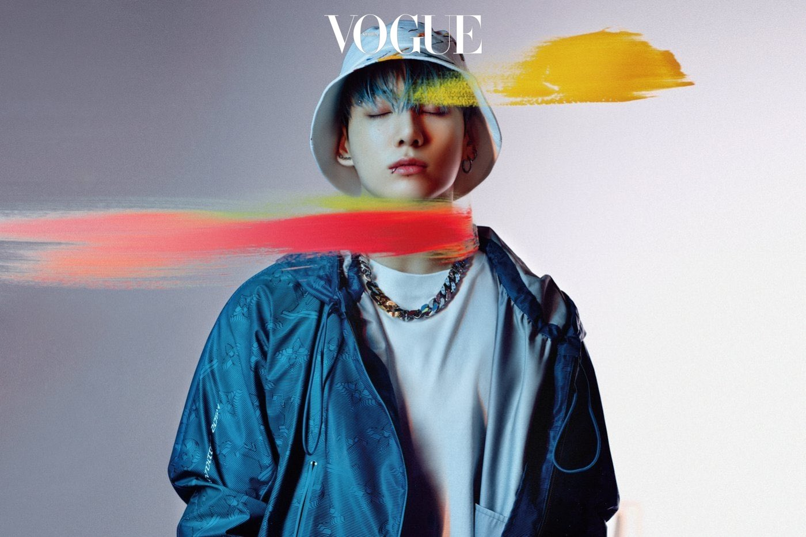
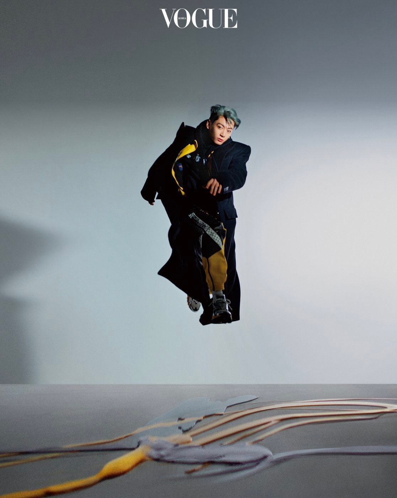

Entrevistas
Japan Record Awards 2021
Discurso de agradecimiento de BTS por ganar el «Premio Especial Internacional de Música».
NAMJOON: Hola espectadores de los Japan Record Awards. TODOS: ¡Buenas noches, somos BTS! NAMJOON: Nos sentimos honrados de anunciar que hemos sido galardonados con el Premio Especial Internacional de Música en el histórico Japan Record Award. JIN: Muchas gracias. JUNGKOOK: Estamos felices. JIN: Recibimos este premio precioso de nuevo luego del que recibimos el año pasado. HOBI: Y que tanta gente escuche nuestras canciones también este año. JIMIN: Nuestra presentación de Butter esta noche transmite el mensaje a nuestros fans de que deseamos "derretirnos en tu corazón como mantequilla y mantenerte cautivado". TAEHYUNG: Esta vez no podremos actuar en el escenario. YOONGI: ¡Así que esta noche enviaremos una actuación que ya hicimos (en el concierto online de PTD). JUNGKOOK: Bueno, entonces aquí está... TODOS: ¡Butter!
Por segundo año consecutivo, BTS gana el Premio Especial Internacional de Música en los Japan Record Award. Al estar el grupo en estas fechas de vacaciones (y además algunos miembros en cuarentena por COVID-19), no pudieron asistir presencialmente. Por lo que enviaron un agradecimiento grabado en Los Ángeles el día de la presentación de Jingle Ball, y mostraron el video de la canción Butter en el concierto PTD on stage online.
¡Felicitaciones por otro premio, chicos!
Jungkook para Vogue Korea
Desde los 15 años hasta ahora, cómo Jungkook ha evolucionado y se ha mantenido igual.

«No tengo respuestas pero lo que está claro es que quiero decidir por mi mismo cómo vivir mi vida».
Aquellos que trabajan en el ojo público se ven sometidos a muchas influencias diferentes, lo que les dificulta formular sus propias visiones del mundo. Lo mismo ocurre con quienes han tenido que moldearse desde pequeños para lograr un determinado objetivo. Pero Jungkook es diferente. Sus búsquedas fuera de BTS sufieren que tiene ideas muy claras sobre lo que quiere hacer, y muestra que puede aislarse de las influencias externas. Esta es una de las cosas que nos gustan de Jungkook.
¿Cómo ha logrado impulsar sus propias ideas? JungKook, quien escucha con atención mientras hace contacto visual, responde: «No tengo respuestas claras como '¡así es como voy a vivir!', pero lo que está claro es que quiero decidir por mí mismo cómo vivir mi vida. Quizás habrá una vida futura, pero, ¿quién sabe? Esta es la única vida que tengo y es corta. Nunca haría algo en lo que todo el mundo esté de acuerdo que está mal, pero cuando varias formas son aceptables, quiero vivir en mis propios términos. Me decidí por esto bastante pronto».
Con curiosidad por los pensamientos de Jungkook sobre la naturaleza fugaz de la vida, respondo: «Dicen que la vida es corta, pero el arte es eterno. ¿Qué es eterno para ti?»
Jungkook dice: «Supongamos que lo que hago es arte. ¿Sería esto lo más importante? ¿No es la vida misma más importante? El tiempo que he vivido se destila en mí. Entonces, la vida es finita pero también eterna».
Jungkook está preocupado por todo tipo de arte, no solo por la música. Algunos fans quieren que Jungkook, el Golden Maknae (el más joven de la familia) de BTS, muestre su talento en otras áreas más, como pintura, fotografía y edición de videos. Jungkook dice humildemente: «Estos son solo algunos de mis otros intereses y no siento la necesidad de desarrollarlos todos». Pero las personas con múltiples talentos seguramente deben escuchar una voz interior que las insta a hacer uso de tales talentos. Debe ser difici ignorar el deseo de expresarse de varias formas además de la música.
«Tengo metas tanto realistas como idealistas», dice Jungkook. «Solía ser codicioso e hice lo que quería hacer sin pensarlo mucho. Pero la forma de pensar cambia con el tiempo, al igual que la vida en general y las relaciones también. En estos días, soy más realista. Lo que necesito hacer es más importante que lo que quiero hacer». Además de esto, a Jungkook no le gusta revelar sus creaciones hasta que esté completamente satisfecho con ellas.
«Nunca serán perfectas, pero al menos tienen que estar a un nivel con el que esté contento», me dice. «Trabajaré duro y algún día podré desvelarlas al público. En este momento, no tengo la energía mental para gastar en mejorarlas».
«Mis letras reflejan mi discurso e individualidad, es otra área en la que puedo expresarme».
Durante los últimos dos años, no ha sido fácil para Jungkook trabajar, incluso en sus pasatiempos, como la pintura y la fotografía. «Si el escenario es el mismo cada vez que uno actúa, habrá menos emoción para el artista y para el espectador por igual», dice.
«Necesito seguir buscando el cambio y desafiarme a mi mismo. Lo mismo ocurre con la fotografía y la pintura. Llevaba una cámara conmigo cuando trabajábamos, pero no podíamos movernos mucho debido al Covid-19, por lo que todas las fotos se veían bastante similares. Y hacer viajes arriesgados que no eran realmente necesarios no era una opción». En cambio, Jungkook encontró alegria en los libros, portales a otros mundos. Está haciendo un esfuerzo por leer más libros en su tiempo libre para mejorar en la escritura de letras. Su fascinación actual por escribir letras se vincula con sus otras actividades artísticas.«Mis letras reflejan mi discurso e individualidad», explica. «Esta es otra área en la que puedo expresarme».
Con suerte, Jungkook pronto disfrutará de un cambio de escenario. Estaba emocionado por la oportunidad de visitar la Asamblea General de la ONU para cantar «Permission to Dance» en septiembre de 2021.
«Cada vez que preparamos un álbum y grabamos una actuación en el escenario, tengo la misma mentalidad», dice. «Pero hubo algo más cuando filmamos un video con bailarines en el césped frente a la Asamblea General de la ONU. Divertirme bailando y cantando juntos al aire libre me hizo sentir que se acercaban días mejores. Sentí que se acercaba el día en que podríamos conocer a ARMY de cerca, o el día en que podría salir al amanecer y disfrutar de deliciosos bocadillos».
Le pregunté si es posible que una superestrella vaya sola a un restaurante nocturno, pero Jungkook sonríe y dice: «Siempre hay una manera».
BTS ha cambiado la vida de Jungkook dramáticamente. En 2014, BTS salió a la calle en Los Ángeles e invitó a transeúntes al azar a asistir a su concierto gratuito. Esto estaba siendo filmado como parte de un programa de televisión, pero trabajaron duro para promover su grupo repartiendo folletos. Desde entonces, BTS se ha disparado: en 2021, las entradas para su concierto en el SoFi Stadium, cerca de Los Ángeles, se agotaron en minutos. Comparando entonces con ahora, Jungkook está mudo. «Siempre me pregunto por qué la gente nos ama y adora», admite. «He pensado mucho en cómo llegué a este punto. En primer lugar, ¡tuve la suerte de tener miembros de equipo talentosos! En segundo lugar, tenemos un CEO al que realmente le encanta la música. Aparte de eso, ¿quizás la energía de las canciones, letras, mensajes, presentaciones y apariciones públicas de BTS atrajo a más y más fans? Últimamente, se ha vuelto aún más dificil para mi pensar en la situación. Supongo que es porque no puedo conocer a la audiencia en persona. Necesito trabajar más duro para demostrar que merezco su apoyo».
JungKook también es muy consciente de la influencia positiva de BTS. «A medida que envejezco, siento más presión», confiesa. «No soy particularmente genial y no soy tan bueno y virtuoso. Soy una persona muy común y los demás miembros me regañan a menudo por mi comportamiento inmaduro. Si el mundo ve que tenemos una influencia positiva, entonces debo intentar ajustar y hacer coincidir mis acciones y pensamientos con esos valores».
ARMY ha estado poniendo en práctica los mensajes positivos de BTS. Sus proyectos ambientales, como salvar selvas tropicales y ballenas, y su recaudación de fondos para grupos vulnerables como refugiados y personas LGBTQ han sido asombrosos en términos de su alcance y velocidad. ARMY parece haberse convertido en un movimiento cultural global que va más allá del fandom. Jungkook está asombrado e intrigado por ARMY. «Soy simplemente alguien a quien le encanta cantar y bailar, pero ARMY está logrando cosas más importantes para nosotros», dice. «No puedo agradecerles lo suficiente por su apoyo para nosotros, pero también están haciendo cosas maravillosas. Estoy profundamente conmovido por ARMY, que comenzó como un grupo de seguidores de BTS pero se ha convertido en una fuerza real para el bien. Me inspiran».
Jungkook quería encontrar una manera de pagarle a ARMY, pero se encontró perdido. «Parecía que no había nada especial que pudiera hacer», dice. «He llegado a la conclusión de que ser bueno en mi trabajo,como lo he estado haciendo, es lo que puedo hacer por ARMY».
Jungkook se ha acercado a su trabajo con entusiasmo en lugar de aprensión. No es que haya estado libre de ansiedad porque cada álbum fuera un éxito o porque sea amado por los fans, sino porque ha creído en si mismo y en sus compañeros de grupo. «Hicimos nuestro mejor esfuerzo con cada álbum y en cada escenario», dice Jungkook. «Nadie puede ser perfecto, pero he podido disfrutarlo porque hago todo lo que se me pide. Por eso puedo aceptar un resultado pobre ocasional».Esta parece ser la actitud de Jungkook hacia la vida. «Entiendo que el trabajo duro y el resultado son dos cosas distintas», explica. «He aprendido a aceptar el resultado. Por supuesto, tener la ambición de mejorar es otro asunto».
Cuando Jungkook debutó a los 15 años, seguramente debe haber madurado más que cualquier otro miembro de BTS. Por otro lado, le dicen: «Es genial que no hayas cambiado en absoluto». ¿Qué ha cambiado más de él y cómo ha permanecido igual durante la última década? «Era un niño afectuoso y confiado, y todavía lo soy», admite. «Hasta que me rompan el corazón, lo doy todo a mis seres queridos. Todos mis compañeros de grupo reconocen esto. A veces, me preocupa lo que va a pasar, pero tengo la suerte de tener a mis compañeros de grupo a mi lado, lo cual es reconfortante. Pero si dependiera demasiado de ellos, seria como esconderme detrás de ellos, así que necesito poder sostenerme por mi cuenta».
A excepción de esto, agrega, todo, desde la forma en que habla hasta la forma en que piensa, ha cambiado. Creo que otra cosa que permanece igual es su energía. Jungkook no muestra signos de cansancio durante la sesión de fotos para Vogue, que avanza a un ritmo rápido y sin descanso. Sube la energía del set, moviéndose al ritmo de la música de fondo y acercándose a los compañeros de grupo para masajearles los hombros o alisarles la ropa.
Como dice Jungkook, después de 10 años increíbles, ¿cómo serán los próximos 10? «Permission to dance», contiene las palabras, «No tenemos que preocuparnos. Porque cuando caemos, sabemos cómo aterrizar».
Le pregunto a Jungkook si ha pensado mucho en cómo aterrizar. «Obviamente, muchas personas tienen más éxito que yo y, a medida que envejezco y pasa el tiempo, mi carrera está destinada a disminuir», reflexiona. «Pero no pienso en aterrizar. Hay muchas cosas que todavía quiero hacer. Quiero seguir expandiéndome como artista y lograr cosas aún mayores».